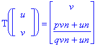
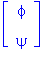
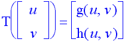
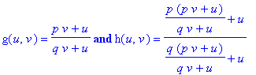
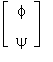
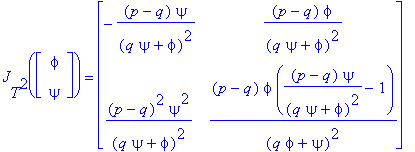

In this page we will look at the equation:
xn+1 = (bxn+gxn-1)/(Bxn+Cxn-1). (1)
Let
xn = gyn/C, p = b/g, and q = B/C.
This change
of variables reduces Eq. (1) to
yn+1 = (pyn+ yn-1)/(qyn+ yn-1). (2)
To avoid the
degenerate case, we will also assume that
p ¹ q.
The only equilibrium point of Eq. (2) is
ÿ = (p+1)(q+1)
and the linearized
equation of Eq. (2) about ÿ is
zn+1-(p-q)zn/((p+1)(q+1))+(p-q)zn-1/((p+1)(q+1)) = 0, n = 0, 1, ...
By applying the Linearized Stability Theorem, we obtain the following result:
Theorem 1:
(a) Assume that
p>q.
Then the positive
equilibrium of Eq. (2) is locally asymptotically stable.
(b) Assume that
p<q.
Then the positive
equilibrium of Eq. (2) is locally asymptotically stable when
q<pq+1+3p (3)
and is unstable (and in fact a saddle point equilibrium) when
q>pq+1+3p. (4)
Existence of a Two Cycle
It follows from that when p<q, Eq( 2) has no prime period two
solutions. On the other hand when
p<q.
and
q>pq+1+3p,
Eq. (2) possesses
a unique period two solution:
..., f, y, f, y,... (5)
where the values
of f
and y
are the (positve and distinct) solutions of the quadratic equation
t2-(1-p)t+p(1-p)/(q-1) = 0. (6)
In order to
investigate the stability nature of this prime period two solution, we
set
un = yn-1 and vn = yn for n = 0, 1,...
and write Eq.
(2) in the equivalent form:
un+1 =
vn
vn+1
=
(pvn+un)/(qvn+un), n = 0, 1,....
Let T be
the function on (0,¥)´(0,¥)
defined
by:

.
Then

is a fixed
point of T2, the second iterate of T. One
can see that

where

The prime period two solution (5) is asymptotically stable if the eigenvalues of the Jacobian matrix JT2, evaluated at

lie inside the unit disk. One can see that
Set
P = (p-q)/((qy+f)2) and Q = (p-q)/((qf+y)2)
Then
and its characteristic equation is
l2+(Py+Qf-PQfy)l+PQfy = 0
By applying the Linearized Stability Theorem , it follows that both
eigenvalues of JT2, evaluated at
lie inside the unit disk if and only if
|Py+Qf-PQfy|<1+PQfy<2
or equivalently if and only if the following three inequalities hold:
Py+Qf+1>0
(7)
Py+Qf<1+2PQfy
(8)
and
Observe that
f > 0, y > 0, P < 0 and Q < 0
and so Inequality (6) is always true.
Next we will establish Inequality (7). We
will use the fact that
f+y
= 1-p, fy
= p(1-p)/(q-1)
f
= (py+f)/(qy+f)
and y
= (pf+y)/(qf+y)
Inequality (7) is equivalent to
0 < (p-q)y/((qy+f)2)+(p-q)f/((qf+y)2)+1
which is true if and only if
(q-p)[(qf+y)2y+(qy+f)2f] < (qy+f)2(qf+y)2
if and only if
(q-p)[(qf+y)(pf+y)+(qy+f)(py+f)] < [(qf+y)(qy+f)]2. (10)
Now observe that the left-hand side of (10) is
I = (q-p)[(qp+1)(f2+y2)+2(p+q)fy]
= (q-p)[(qp+1)(f2+y2)-2(qp+1-p-q)fy]
= (q-p)[(qp+1)(1-p)2-2p(1-p)(p-1)(q-1)/(q-1)]
(q-p)(1-p)2(qp+1+2p)
The right-hand side of (10) is
II = [(qy+f)(qf+y)]2
= [(q2+1)fy+q(f2+y2)]2
= [q(f+y)2+(q-1)2fy]2
= [q(1-p)2+(q-1)p(1-p)]2
= (1-p)2(q-p)2.
Hence Inequality (7) is true if and only if
q>1 +p
which is clearly true.
Finally, Inequality (9) is equivalent to
(p-q)2fy < (qy+f)2(qf+y)2
which is true if and only if
(q-p)Ö(fy) < (qy+f)(qf+y)
if and only if
(q-p)Ö(fy) < (q2+1)yf+q(f2+y2)
if and only if
(q-p)Ö(fy) < (q2+1)yf+q[f2+y2-2fy]
if and only if
(q-p)Ö(fy) < (q2+1)yf+q(f+y)2
if and only if
(q - p)Ö(fy) < (q - l)2p(1-p)/(q-1) +q(l-p)2
if and only if
(q-p)Ö(fy) < (l-p)(q-p)
if and only if
p(1-p) <(1-p)2
if and only if q > pq + 1, which is clearly true.
In summary, the following result is true about
the local stability of the prime period two solution (4) of Eq(2).
Theorem 2:
Assume that Condition (3) holds. Then Eq.
(2) posseses the prime period two solution
..., f, y, f, y,...
Semicycle Analysis
In this section, we present a semicycle analysis of the solutions of Eq(2).
Theorem 3:
Let {yn} be a nontrivial
positive solution of Eq (2). Then the following statements are true:
(a) Assume p > q. Then {yn} oscillates
about the equilibrium ÿ with semicycles of length two or three, except
possibly for the first semicycle which may have length one. The extreme
in each semicycle occurs in the first term if the semicycle has 2 terms
and in the second term if the semicycle has 3 terms.
(b) Assume p < q. Then either {yn}
oscillates about the equilibrium ÿ with semicycles of length one,
after the first semicycle, or {yn} converges monotonically to
ÿ.
Global Stability Analysis when p < q
The main result in this section is the following
Theorem 4:
Assume that
p<q
and (3) holds. Then the positive equilibrium ÿ of Eq. (2) is globally asymptotically stable.
The method employed in the proof of Theorem 1.4.5 can also be used to establish that certain solutions of Eq (1) converge to the two cycle (5) when instead of (3), (4) holds.
Theorem 5 Assume that (4) holds. Let f,
y, f, y,..., with f
< y, denote
the two cycle of Eq (2). Assume that for some solution {yn}¥n=-1
of Eq (2) and for some index N ³ -1,
yN ³ y and yN+1 £ y. (11)
Then this solution converges to the two cycle ..., f, y, f, y,....
Next we want to find more cases where the conclusion of the last theorem holds. We consider first the case where eventually consecutive terms yi, yi+1 lie between m and M.
Theorem 6:
Assume that
p < q,
and that Eq. (1) possesses the two cycle Solution (5). Then every oscillatory
Solution of Eq. (1) converges to this two cycle.
Global Stability Analysis when p> q
Here we have the following result.
Theorem 7:
Assume that p>q and p < pq +1+ 3q.
Then the positive equilibrium ÿ of Eq. (2) is globally asymptotically
stable.
Bibliography:
1. M. R. S. Kulenovic, G. Ladas and W.S. Sizer,
On the Recursive Sequence xn+1 = (a
xn + b xn-1 )/(g
xn + d xn-1) , Math.
Sci. Res. Hot-Line 2(1998), no.5, 1-16.
2. M. R. S. Kulenovic and G. Ladas, Dynamics
of Second Order Rational Difference Equation, (to appear).
Click here to go to Home Page for Difference Equations at URI